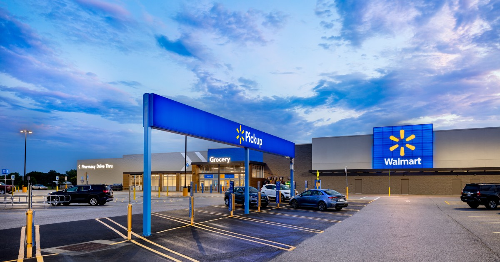

Walmart Inc. je ameriška multinacionalna korporacija, lastnica istoimenske trgovske verige Walmart, ki jo je leta 1962 ustanovil Sam Walton

Je največja veriga na svetu v obsežnem maloprodajnem kanalu, ki je decembra 2021 imela 11.847 trgovin in klubov v 27 državah. Deluje kot Walmart v ZDA in Walmart de México y Centroamérica v Mehiki in Srednji Ameriki ter kot Seiyu Group na Japonskem. Do leta 2020 je delovala kot Asda v Združenem kraljestvu, nato pa je bila prodana za 8,8 milijarde dolarjev bratoma Mohsin in Zuber Issa (ustanovitelja skupine EG) ter zasebnemu kapitalskemu podjetju TDR Capital. Prav tako ima v lasti in upravlja maloprodajna skladišča Sam's Club. Pod nadzorom družine Walton (več kot 50-odstotni delež prek njihovega holdinga Walton Enterprises in posameznih holdingov) je od leta 1972 uvrščen na Wall Street. Leta 1945 je Sam Walton Sema Waltona, nekdanji uslužbenec J.C. Penney, najemite podružnico trgovin Bena Franklina pri bratih Butler. Njegov cilj je prodaja izdelkov po nizkih cenah, da doseže največji obseg prodaje in se zadovolji z nižjo, a zanesljivo stopnjo dobička. Na začetku ima nekaj težav: cena najema trgovine je sicer visoka, vendar mu uspe najti poceni dobavitelje v primerjavi s tistimi, ki jih uporablja konkurenca. Prodaja hitro narašča, prvo leto ima prihodek 105.000 dolarjev, ki se naslednje leto poveča na 140.000 in naslednje leto doseže 175.000 dolarjev. Po petih letih dobiček doseže 250.000 $. Ko najem poteče, Walton ne najde pogodbe za podaljšanje, zato odpre novo trgovino na 105 N. Main Street v Bentonvillu in jo poimenuje "Walton's Five and Dime". Ta trgovina je zdaj muzej Walmart.
Od leta 2000 do danes Leta 2000 H. Lee Scott postane predsednik in izvršni direktor Walmarta, prodaja podjetja se poveča na 165 milijard dolarjev, leta 2002 se Walmart prvič uvrsti na seznam Fortune 500 kot največja ameriška korporacija s prodajo 219 milijard dolarjev in dobičkom 6,7 milijarde . Leta 2002 je vstopil tudi na Japonsko z nakupom manjšinskega deleža v skupini Selyu. Delniški delež, ki ga bo šest let pozneje, leta 2008, preoblikoval v kontrolni delež. Po posledicah orkana Katrina septembra 2005 Walmart uporablja svojo logistično mrežo za organizacijo hitrega odzivanja na nesreče, pri čemer donira 20 milijonov dolarjev, 1500 tovornjakov blaga, hrano za 100.000 obrokov in obljubo zaposlitve za vsakega od svojih razseljenih delavcev. Neodvisna študija Stevena Horwitza z Univerze St. Lawrence je pokazala, da so Walmart, The Home Depot in Lowe's uporabili svoje lokalno znanje za dostavo potrebščin za nujne primere in ponovno odprli trgovine veliko preden je začela zvezna organizacija za upravljanje v izrednih razmerah (FEMA). Oktobra 2005 Walmart napoveduje več okoljskih ukrepov za povečanje energetske učinkovitosti. Glavni cilji: zmanjšanje emisij toplogrednih plinov za 20 % v sedmih letih, zmanjšanje porabe energije v trgovinah za 30 % in zmanjšanje trdnih odpadkov iz ameriških trgovin in Sam's Clubs za 25 % v treh letih. Podjetje načrtuje tudi tri nove eksperimentalne trgovine z vetrnimi turbinami, sončnimi fotonapetostnimi ploščami, kotli na biogoriva, vodno hlajenimi hladilniki in ustanovi lastno teksaško elektroenergetsko podjetje, Texas Retail Energy, z nalogo oskrbe svojih trgovin z nizko ceno energije, kupljeno pri veleprodajne cene. S to pobudo podjetje pričakuje, da bo letno prihranilo 15 milijonov dolarjev in posledično prodajalo električno energijo tudi teksaškim porabnikom. Marca 2006 je Walmart predstavil nov koncept "supercentra" v Teksasu, katerega namen je bil konkurirati trgovinam, ki veljajo za bolj sofisticirane. Nova trgovina ima lesena tla, širše hodnike, suši bar, kavarno/sendvičarico z brezplačnim brezžičnim dostopom do interneta ter dražja piva, vina, elektroniko in drugo blago. Zunanjost ima zeleno ozadje namesto modrega, ki se je prej uporabljal v njegovih supercentrih. Septembra 2007 je uvedla nov oglas s sloganom »Prihranite denar, živite bolje«, ki je nadomestil tistega, ki se je uporabljal zadnjih 19 let, »Vedno nizke cene, vedno«. Junija 2008 je odstranil zvezdo iz logotipa in jo nadomestil z iskro, ki spominja na rožo ali zvezdo. V začetku leta 2009 vstopi v Čile s prevzemom Distribucion y Servicio D&S SA, maja vstopi na indijski trg s 50-odstotnim partnerstvom s podjetjem Bharti. Februarja 2010 je prevzel podjetje za pretakanje videa Vudu, Inc. za približno 100 milijonov dolarjev.In tisto leto je postala prva multinacionalka na svetu po prometu. Prav tako v istem mesecu pridobi 51 % Massmart Holdings, južnoafriškega podjetja, ki Walmartu omogoča vstop na afriške trge: Južna Afrika, Bocvana, Gana, Lesoto, Malavi, Mauritius, Mozambik, Namibija, Nigerija, Svazi, Tanzanija, Uganda in Zambija. Leta 2015 je bila veriga v središču pravnih polemik zaradi prodaje strelnega orožja, ki pa je bilo slednje zaradi pomanjkanja gospodarske uspešnosti izločeno iz supermarketov. 8. avgusta 2016 je Walmart objavil dogovor o nakupu platforme za spletno nakupovanje Jet.com za 3,3 milijarde USD. Walmart in Jet bosta ostali ločeni blagovni znamki, Marc Lore pa bo obdržal vodilno vlogo v podjetju. 9. maja 2018 je podal 16 milijard dolarjev vreden predlog za prevzem 77 % družbe Flipkart, številka ena v indijskem e-trgovini, ki sta jo ustanovila Sachin Bansal in Binny Bansal. To je Walmartov največji prevzem po letu 1999. Novembra 2020 Walmart napove začetek testne faze za dostavo, ki jo izvajajo samovozeči električni avtomobili Cruise podjetja General Motors brez človeškega posredovanja.

| Ceo | Doug McMillon |
| Ustanovitelj Walmarta | Sam Walton |
| Drugi ustanovitelj | Bud Walton |
| Dan ustanovitve podjetja | 2.julij 1962 |